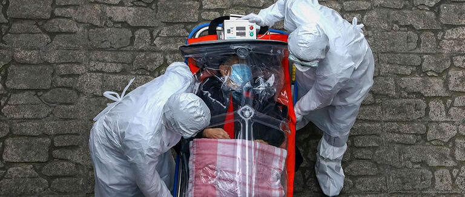
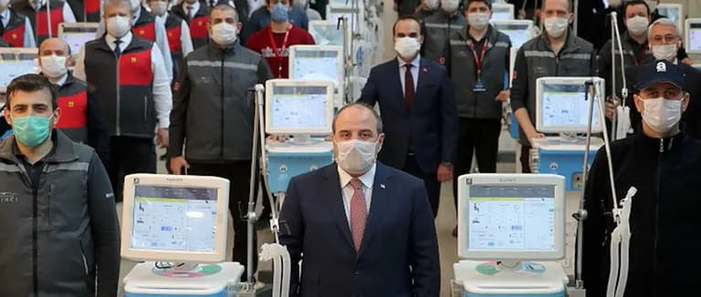

فيروس كورونا
بدأ فيروس كورونا بالإنتشار مع نهاية عام 2019 يعتبر فيروس كورونا سريع الإنتشار وينتقل عبر التلامس او الرذاذ الناتج عن السعال

حرب فيروس كورونا | مقارنة بين تركيا والدول الأوروبية
كورونا يحطم النظام الصحي العالمي ويرمي المرضى دون علاج
أجهدت جائحة فيروس كورونا النظام الصحي في جميع أنحاء العالم، فسرعة الطلب المتزايد على المرافق الصحية، والعاملين في مجال الرعاية الصحية، يهدد بوضع بعض الأنظمة الصحية للعمل فوق طاقتها، ويجعلها غير قادرة على القيام بأعمالها بفعالية.
جدول المحتويات
وقد أثبتت الجائحات السابقة أنه عندما يكون النظام الصحي في حالة الارتباك وغير مستعد، فإن عدد الوفيات الناجمة من الأمراض التي يمكن الوقاية منها باللقاحات، وغيرها من الحالات القابلة للعلاج، يمكن أن يتزايد بشكل كبير.
إقرا اكثر : لقاح كورونا: الأنواع المتوفرة وما أفضلها؟
ففي العامين 2014-2015 وخلال جائحة الإيبولا تجاوز عددُ الوفيات الناجمة عن الحصبة والملاريا وفيروس نقص المناعة البشرية والإيدز، والسل الناجم عن فشل النظام الصحي عددَ الوفيات الناجمة عن إيبولا.
وشدد المدير العام لمنظمة الصحة العالمية تيدروس أدهانوم غيبريسوس على أن: "أفضل دفاع ضد أي تفشي مرض ما هو نظام صحي قوي". لذلك يكشف كوفيد 19 عن مدى هشاشة العديد من الأنظمة والخدمات الصحية في العالم، الأمر الذي يدفع البلدان لاتخاذ خيارات صعبة، بشأن أفضل السبل لتلبية احتياجات شعوبها.
ينبغي أن تحدد البلدان الخدمات الأساسية التي ستحظى بالأولوية في جهودها، للحفاظ على استمرارية تقديم الخدمات، وإجراء تحولات استراتيجية، لضمان أن الموارد المحدودة توفر أقصى فائدة للسكان.
خريطة انتشار فيروس كورونا في تركيا
شاهد الآن أولاً بأول: خريطة انتشار كورونا حول العالم وأعداد الاصابات !!

كيف يتم قياس النظام الصحي بعدد الأسرة في المستشفيات؟
يتم استخدام أسرة المستشفيات للإشارة إلى توفر الخدمات الصحية للمرضى. حيث لا يوجد معيار عالمي دقيق لمعرفة عدد الأسرة المتواجدة في المستشفيات. لذلك يتم جمع البيانات لعدد الأسرة في المستشفيات عن طريق معرفة عدد السكان في البلاد، إذ يتم حساب أسرة المستشفيات لكل 1000 نسمة من الجهات المختصة.
ففي العام 1960 في تركيا كان هناك 1.70 سريراً لكل 1000 شخص، بينما وصل العدد في العام 2017 إلى 2.80 لكل 1000 شخص. وهذا يدل على تطور وقوة النظام الصحي في تركيا، عل عكس دول القارة العجوز التي تعاني من انحدار شديد في مؤشر عدد الأسرة في المستشفيات على مدى العقود الخمسة الاخيرة.
الأسرة المجهزة بآلات التنفس الاصطناعي وغرف العناية المركزية
وحدة أو غرفة العناية المركزة هي قسم خاص في المستشفى يقدم أقصى أنواع الرعاية الصحية الممكنة، ويتميز عادة بنسبة الممرضين إلى المرضى تساوي 1:1 (أي ممرض لكل مريض). وتخصص أسرة العناية المركزة للمرضى أصحاب الحالات الحرجة والخطيرة، حيث يتوافر بها كادر طبي وأجهزة الإنعاش وجهاز التنفس الاصطناعي.
أصبحت المستشفيات حول العالم في حاجة ماسة إلى أجهزة التنفس الاصطناعي، لمكافحة انتشار فيروس كورونا المستجد. الذي بات يتفشى بوتيرة متسارعة في العالم.
ببساطة، عندما يتسبب مرض كوفيد-19 في الفشل التنفسي، إثر التهاب حاد في الرئتين، يتولى جهاز التنفس الاصطناعي عملية التنفس في الجسم، ويمنح ذلك المريض وقتاً لمكافحة العدوى والتعافي، ومن ثم تنقذ تلك الأجهزة أرواح المصابين، الذين يعانون من مضاعفات خطيرة بسبب الفيروس.
الجدير بالذكر أن تركيا من أوائل الدول التي تصنع أجهزة التنفس حيث تعمل على كفاية نفسها ومساعدة دول أوروبا والعالم بينما تعاني أوروبا من نقص حاد في أعداد الأسرة وأجهزة التنفس ناهيك عن التكلفة الباهظة التي يتكبدها المريض.

قلة الوسائل ونقص الموظفين في القطاعات الطبية
بسبب الطلب المتزايد على المرافق الصحية؛ والإقبال الكبير على شراء المستلزمات الطبية؛ حذرت منظمة الصحة العالمية من أن انقطاع معدات الحماية الشخصية (PPE)، يعرض الأرواح لخطر الإصابة بفيروس كورونا الجديد، وغيره من الأمراض المعدية.
ويعتمد عاملو الرعاية الصحية على معدات الحماية الشخصية لحمايتهم، وحماية مرضاهم من الإصابة بالعدوى، ونقلها إلى الآخرين.
غير أن نقص هذه المستلزمات يعرض حياة الأطباء والممرضين، وغيرهم من الأطباء العاملين في الخطوط الأمامية لخطر الإصابة بفيروس كورونا، جراء صعوبة الحصول على إمدادات أساسية كالقفازات والأقنعة الطبية وأجهزة التنفس ونظارات الوقاية وواقيات الوجه والأردية الطبية.
وقد دعت منظمة الصحة العالمية قطاع الصناعة والحكومات إلى رفع معدلات الإنتاج بنسبة 40 % لتلبية الطلب العالمي المتزايد.
تعرف تركيا بوجود كادر طبي ضخم وذو خبرة عالية جدا مقارنة ببعض دول أوروبا كبلجيكا حيث المشكلة الرئيسة التي تؤرق حياة المجتمع البلجيكي، هي عدم كفاية عدد الأطباء، فالتقديرات الحكومية الحديثة تشير أن لكل ألف شخص طبيباً واحدا فقط.
إمتلاء المستشفيات بمرضى فيروس كورونا
يبدو أن مسألة الاكتظاظ مشكلة مستمرة للعديد من المستشفيات في العالم. ويؤدي ذلك إلى زيادة الضغط على الأطباء والممرضين، وغيرهم من المهنيين الصحيين، ويمكن أن يؤدي أيضاً إلى تقويض حصول المريض على الرعاية، ويكون له تأثير سلبي على النتائج الصحية.
ويرجع السبب الرئيسي في مسألة الاكتظاظ إلى عدم التوافق بين المعروض من الأسرة، وتدفق المرضى، والطلب المتزايد على المرافق الصحية. أما السبب الآخر الأكثر أهمية هو المعايير غير المتسقة عبر المستشفيات المختلفة.
ومن الواضح أن الناس يفضلون الإنفاق قليلاً، والحصول على خدمات أفضل خلال الأوقات العصيبة. ويجب ضمان الخدمة المشتركة الأساسية من قبل كل مستشفى.
في تركيا وبفضل العدد الكبير من المستشفيات المعدة حسب أعلى المعايير العالمية مثل مستشفى باشك شهير الذي افتتح في خضم هذا الوباء فإن من الصعب حصول اكتظاظ بينما في دول أوروبا فإن المستشفيات تعاني من الضغط المتزايد المؤدي إلى الاكتظاظ حيث فضلت بعض الدول كألمانيا تأخير مواعيد المرضى إلى أسابيع دون الاكتراث لحالتهم الصحية.
"الصحة العالمية": تركيا قدوة في مكافحة كورونا
أشاد مسؤول بمنظمة الصحة العالمية بجهود تركيا لمكافحة جائحة فيروس التاجي، حيث قال بافل أورسو ممثل منظمة الصحة العالمية في تركيا على تويتر: "إن تركيا بلد مثالي، بفضل قدرتها التشخيصية، وجهودها الهائلة في العلاج في كفاحها ضد كوفيد 19".
وأضاف أورسو: "في 11 مارس/ آذار أصبحت تركيا آخر الدول الكبرى التي أبلغت عن حالة فيروس كورونا، وأكدت وفاتها الأولى بسبب المرض في 17 مارس/ آذار -لرجل يبلغ من العمر 89 عاماً".
وتابع بقوله: "منذ ذلك الحين شددت السلطات القيود على انتشار الفيروس، بما في ذلك إغلاق الشركات غير الضرورية، ومراكز التسوق والسفر بين المدن".
وأكد على أن: "تركيا تدير هذه العملية بشفافية، من خلال مشاركة بيانات دقيقة عن الحالات والوفيات إلكترونياً".
إنجازات تركيا خلال 18 عاماً في تقوية نظام الرعاية الصحية
تعمل وزارة الصحة في تركيا دائماً على تحسين وضعها، كسلطة عامة لتشكيل السياسات وتنظيم المعايير، والرصد والإشراف في إطار برنامج التحول الصحي (HTP)التي بدأت تنفيذه منذ عام 2003.
في هذه العملية فإن رؤية وزارة الصحة هي التوجيه، وتسهيل الاستخدام الفعال، والعادل للموارد المخصصة للرعاية الصحية.
إن مراقبة التأثير على النتائج الصحية لبرنامج التحول الصحي التركي هو أمر بالغ الأهمية للمضي قدماً، لتعزيز التنفيذ الناجح، وتقوية نقاط الضعف. وقد تم تطوير برنامج التحول الصحي التركي على أساس المعرفة النظرية المتاحة، وقد تم إبرام أمثلة حديثة من دول مختلفة، في مرحلة زمنية قصيرة جداً، وأثبتت أنها مثال جيد على المعرفة والكفاءة، والخبرة مع نتائج مبهرة.
وزارة الصحة التركية تحارب كورنا في وقت مبكر ومن دون ضجّة
لقد بدأت تركيا في اتخاذ الإجراءات على الفور من خلال التعاون الفعال، مع جميع المؤسسات العامة والخاصة المعنية، لمنع دخول وتفشي وانتشار المرض في البلاد. وسنأتي على ذكر التدابير الفعالة لاحقاً في المقال.
حرب كورونا تثبت نجاح نظام الرعاية الصحية بتركيا
لقد اتخذت تركيا كثيراً من الإجراءات الوقائية والتدابير القوية لمنع انتشار تفشي فيروس كورونا الجديد، بالإضافة إلى نظام الصحة العامة المتين، وخطط المساعدة الاجتماعية السخية التي جعلت من البلد نموذجاً للعديد من الدول الأخرى في مكافحة خطر فيروس كورونا.
أحد أكثر التدابير فعالية في مكافحة تفشي فيروس كورونا في تركيا هو العدد الكبير للمستشفيات، ووحدات العناية المركزة لكل شخص.
فقد سارعت البلاد أيضاً في الإعلان عن حزم الدعم الاقتصادي، لتجنب انقطاع الإنتاج بشكل عام، وإنتاج أجهزة التنفس، والأجهزة الصحية بشكل خاص، وتوزيع الكمامات (الأقنعة) بشكل مجاني للحماية، ودفع معاشات التقاعد الشهرية للمسنين في منازلهم، وإيواء المشردين، والتي كانت قدوة للعالم بأسره.
إغلاق المطارات كان كجزء من الإجراءات التي عملت الحكومة على اتخاذها، حيث أغلقت أولاً معابرها الحدودية أمام البلدان المعرضة للخطر، وبشكل تدريجي لجميع البلدان المجاورة، وفي النهاية حظرت جميع الرحلات الدولية.
كما أعادت تركيا مواطنيها من عديد الدول الأوروبية، ومن مناطق أخرى من العالم، إلى منازلهم بعد الانتهاء من إجراءات الحجر الصحي لمدة 14 يوماً في المهاجع العامة المخصصة لهم.
يجدر الذكر هنا أن تركيا شرعت باتخاذ تدابير صارمة كإغلاق المدارس وفرض قيود على السفر والأنشطة العامة المسببة للزحام فوراً بعد ظهور أول حالة بينما تأخرت الدول الاوروبية كألمانيا وفرنسا وإيطاليا وإسبانيا بين 39 الى 49 يوماً من ظهور أول حالة لاتخاذ إجراءات مماثلة.
دول أوروبية تنشد دعماً طبياً من تركياً
أرسلت تركيا مساعدات وإمدادات طبية إلى ما يقارب من 30 دولة في 5 قارات، لدعم الجهود المبذولة في مكافحة جائحة فيروس كورونا.
وقد أرسلت إمدادات مثل معدات الحماية والمعقمات إلى الدول الأوروبية، مثل إسبانيا وإيطاليا والمملكة المتحدة.
ففي إيطاليا حيث تسبب الفيروس في وفاة عدد قياسي، تحدث مسؤولون في 1 أبريل/ نيسان عن طائرة عسكرية تركية وصلت إلى إيطاليا، تقل مساعدات طبية. ووفقاً لبيان صادر عن وزارة الدفاع الوطني التركية، أقلعت الطائرة من محطتها الأولى في مدريد في إسبانيا إلى إيطاليا. وتشمل المستلزمات الطبية أقنعة تركية ومعدات واقية ومطهرات.
وفي إسبانيا أكدت السلطات وصول أجهزة تنفس من تركيا. وشاركت وزارة الخارجية على تويتر صور التفريغ في مطار باراخاس، لطائرة ترفع علم تركيا مع الأجهزة والمعدات.
فى وقت سابق، أعلنت الوزارة أن: "150 جهاز تنفس من تركيا فى طريقها بالفعل، وستصل الى إسبانيا وسيتم تسليمها كما هو مخطط إلى وجهاتهم النهائية".
أما في المملكة المتحدة (بريطانيا) فقد أكد المسؤولون وصول طائرة شحن عسكرية تركية تحمل إمدادات طبية لاستخدامها ضد جائحة فيروس كورونا. حيث نشرت وزارة الدفاع التركية على تويتر "بتوجيه من الرئيس رجب طيب أردوغان، غادرت طائرات القوات المسلحة التركية التي ستنقل إلى المملكة المتحدة إمدادات المساعدة الطبية التي أعدتها وزارة الصحة التركية لاستخدامها في محاربة فيروس كورونا".
كما حملت إمدادات المساعدات الطبية رسالة إلى شعب المملكة المتحدة قائلة فيها: "بعد اليأس هناك الكثير من الأمل، وبعد الظلام هناك شمس أكثر إشراقاً".
ووصلت طائرة شحن عسكرية أخرى تحمل دفعة ثانية من المساعدات الطبية إلى المملكة المتحدة، وتتضمن حزمة المساعدة التي تحملها تركيا إلى المملكة المتحدة أقنعة واقية ورداءات طبية.
وقد أشاد الأمين العام لحلف شمال الأطلسي (ينس) بتركيا، لإرسالها مساعدات طبية لإيطاليا وإسبانيا، وهي الأكثر تضرراً في أوروبا من جائحة فيروس كورونا.
تحرير: علاجك الطبية©
المصادر:
اطلع على أحدث المنشورات والأخبار الطبية
عمليات شفط الدهون بالفيزر في تركيا والأسعار 2021
يعتبر شفط الدهون بالفيزر من أفضل عمليات علاج السمنة المفرطة. تعرف معنا على مميزات وعيوب شفط الدهون بالفيزر وكيف تتم العملية وشاهد الفرق قبل وبعد في تركيا.
طرق علاج طول النظر في تركيا وأحدث التقنيات
يعاني الكثير من كبار السن وحتى البالغين من مرض طول النظر . سنتحدث في هذا المقال عن كيفية علاج طول النظر وأسباب هذا المرض ونسبة نجاح العلاج .
الفرق بين زراعة الشعر في ايران وتركيا 2021
بالرغم من أن أسعار زراعة الشعر بين تركيا وايران لا تختلف كثيرا إلا أن هنالك الكثير من الفروق التي قد تحدد لك الدولة الأفضل لزراعة الشعر فيها.
طرق علاج قصر النظر في تركيا وأحدث التقنيات
يعاني الكثير من الأطفال وحتى البالغين من مرض قصر النظر. سنتعرف في هذا المقال على أفضل طرق علاج قصر النظر وأسباب هذا المرض ونسبة نجاح العلاج .